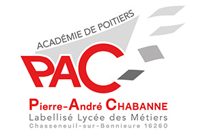
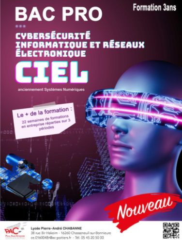

Baccalauréat professionnel
Cybersécurité,
Informatique et réseaux,
Électronique
Le Bac Pro CIEL permet de découvrir comment installer, configurer, dépanner et sécuriser des équipements numériques. Réseaux informatiques, cybersécurité, électronique et objets connectés : la formation s’appuie surtout sur la pratique et des projets concrets.
3 ans après la 3ᵉ · Des projets pratiques · Des périodes en entreprise


Une formation, deux spécialisations
En seconde et en première, les élèves découvrent les différents domaines du Bac Pro CIEL. En terminale, ils choisissent la spécialisation qui correspond le mieux à leurs envies et à leur projet.
Informatique et réseaux
Installer et configurer des réseaux, comprendre leur fonctionnement, administrer des systèmes et apprendre à mieux les protéger.
Électronique
Comprendre les équipements électroniques, réaliser du câblage, effectuer des mesures et intervenir sur des systèmes électroniques ou connectés.
Projets concrets
Apprendre en manipulant du matériel et en réalisant des projets, seul ou en équipe, dans des situations proches du monde professionnel.
Stages en entreprise
Découvrir le fonctionnement d’une entreprise, mettre en pratique ses compétences et gagner progressivement en autonomie.
À quoi ressemble la formation au quotidien ?
En Bac Pro CIEL, on ne passe pas son temps à écouter un cours devant un écran. Une partie importante de la formation consiste à observer, manipuler, tester et chercher des solutions à des problèmes concrets.
Manipuler du matériel
Câbler un équipement, configurer un réseau, effectuer des mesures ou rechercher l’origine d’une panne.
Construire une solution
Mettre plusieurs compétences en pratique dans un même projet et apprendre à organiser son travail.
Travailler ensemble
Répartir les tâches, expliquer ses choix et résoudre des problèmes avec les autres élèves.
Découvrir le métier
Les périodes en entreprise permettent de voir comment les compétences apprises au lycée sont utilisées dans le monde professionnel.
Le Bac Pro CIEL peut-il vous correspondre ?
Cette formation peut vous intéresser si vous aimez comprendre comment fonctionnent les technologies qui vous entourent et si vous préférez apprendre en faisant.
Vous aimez démonter, tester ou réparer ?
La formation demande de chercher l’origine d’un problème, de tester différentes solutions et de vérifier que le système fonctionne correctement.
Les réseaux et la cybersécurité vous intriguent ?
Vous découvrirez comment les équipements communiquent entre eux, comment un réseau est configuré et quels réflexes permettent de mieux le sécuriser.
Vous préférez les projets concrets ?
Les activités pratiques occupent une place importante : câblage, configuration, mesures, diagnostic et mise en service font partie des situations rencontrées.
Ce que vous allez apprendre
| Enseignement | Contenu |
|---|---|
Réseaux | Installer, configurer, tester et sécuriser un réseau informatique |
Cybersécurité | Comprendre les risques numériques, adopter les bons réflexes et protéger les systèmes et les données |
Électronique | Lire des schémas, câbler, mesurer, tester et mettre en service des cartes électroniques et des capteurs |
Systèmes connectés | Découvrir la domotique, les objets connectés et les différentes solutions de communication |
Enseignement général | Français, mathématiques-sciences, anglais, histoire-géographie, EPS et autres enseignements généraux |
PFMP | Mettre les compétences acquises en pratique au sein d’une entreprise |
Débouchés et poursuite d'études
Le Bac Pro CIEL peut permettre d’entrer dans la vie professionnelle ou de poursuivre ses études. Consultez le document pour découvrir les différentes possibilités après le diplôme.
Visite 3D des locaux
Entrez dans les ateliers et découvrez les espaces dans lesquels les élèves travaillent grâce à la visite virtuelle du lycée.
Déplacez la vue à 360° pour explorer les salles et les ateliers. Les vignettes permettent de passer facilement d’un espace à l’autre. La visite présente les locaux de l’ancien Bac Pro SN, aujourd’hui utilisés pour le Bac Pro CIEL.
Ouvrir la visite dans un nouvel ongletPlaquette officielle
Retrouvez dans la plaquette une présentation complète du Bac Pro CIEL proposé au Lycée Pierre-André Chabanne.
Découvrir la filière
La plaquette rassemble les informations essentielles sur la formation : enseignements, projets, périodes en entreprise et possibilités après le bac.
Vidéo de présentation
Une autre façon de découvrir la formation, ses domaines et les diplômes de la filière CIEL.
Admission & contact
Comment intégrer la filière ?
Le Bac Pro CIEL est accessible après la classe de 3ᵉ, dans le cadre de la procédure d’affectation. Il n’est pas nécessaire d’être déjà expert en informatique ou en électronique : l’essentiel est d’avoir envie de comprendre, de manipuler et d’apprendre.
Faut-il choisir une option dès l'entrée ?
Non. La seconde et la première permettent de découvrir les différents domaines de la formation. Le choix entre Informatique et réseaux et Électronique se fait en terminale.
Où se renseigner davantage ?
Pour obtenir des informations adaptées à votre situation, vous pouvez contacter le lycée. Les journées portes ouvertes sont également l’occasion de rencontrer l’équipe et de découvrir les ateliers.
Questions fréquentes
Que signifie CIEL ?
CIEL signifie Cybersécurité, Informatique et réseaux, Électronique. La formation s'intéresse aux systèmes numériques, à leur fonctionnement, à leur maintenance et à leur sécurisation.
Faut-il déjà savoir programmer ?
Il n'est pas nécessaire d'être déjà spécialiste pour s'intéresser à cette filière. La curiosité, l'envie d'apprendre et la persévérance sont de bons points de départ. Si tu as des doutes sur ton niveau, échange avec l'équipe pédagogique pour préparer ton orientation.
Quelles qualités sont utiles dans cette formation ?
Aimer comprendre comment les appareils fonctionnent, être méthodique et prendre le temps de vérifier son travail sont des atouts. Savoir écouter, expliquer un problème et travailler en équipe aide aussi à progresser dans les projets.
Quels types de projets peut-on réaliser ?
Les domaines présentés sur ce site permettent, par exemple, de travailler sur un petit réseau informatique, de rechercher une panne ou de mettre en service un système avec des capteurs. Les projets effectivement proposés dépendent de la progression et des équipements de l'établissement.
Est-ce qu'on étudie uniquement l'informatique ?
Non. La présentation des enseignements inclut aussi l'électronique, les réseaux, les systèmes connectés et la cybersécurité, ainsi que des matières générales comme le français, les mathématiques-sciences et l'anglais. Consulte la rubrique Enseignements pour retrouver le détail.
À quoi servent les stages en entreprise ?
Les stages permettent de découvrir le travail dans une entreprise, d'observer les pratiques professionnelles et de mettre en application les apprentissages. Pour connaître le calendrier et préparer une recherche de stage adaptée à la formation, renseigne-toi auprès de l'équipe pédagogique.
Comment découvrir les locaux avant de venir ?
Ouvre la visite virtuelle à 360° directement sur cette page. Fais glisser la vue pour regarder autour de toi et clique sur les vignettes pour changer de salle. Une connexion Internet est nécessaire pour charger la visite.
Où trouver une présentation de la formation ?
Tu peux regarder la vidéo de présentation sur cette page et consulter la rubrique Plaquette. Pour une question sur ton projet personnel, contacte ensuite le secrétariat du lycée afin d'être orienté vers le bon interlocuteur.